About Me
Originally from Western, MA, I’m a Business Analytics and MIS student at Northeastern University with a passion for data, technology, and storytelling. I’ve worked at Mass Mutual and MFS Investment Management and worked on projects integrating SQL, Power BI, Python, and AI to solve real-world business problems. I’ve honed my skills through leadership and mentorship roles — from Leading the Events Division at Northeastern’s Black Business Student Association to tutoring students in data analytics — which sparked my passion for guiding others while driving impact with technology. When I’m not analyzing data, you can find me exploring music, getting busy in the gym, running point in the rec basketball runs, cooking, or exploring...somewhere, anywhere.
Spotify
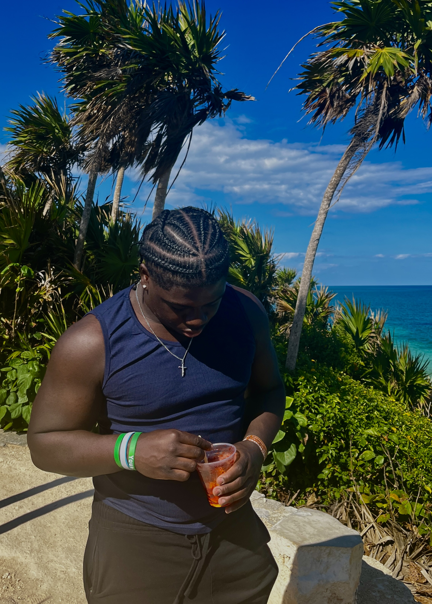
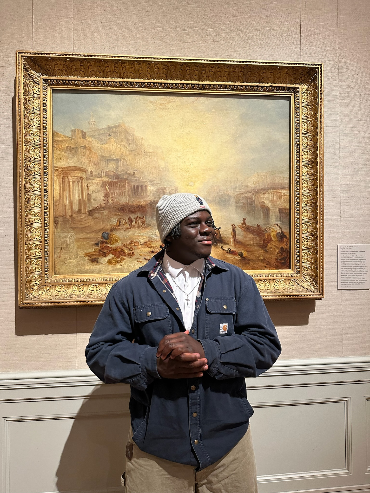
 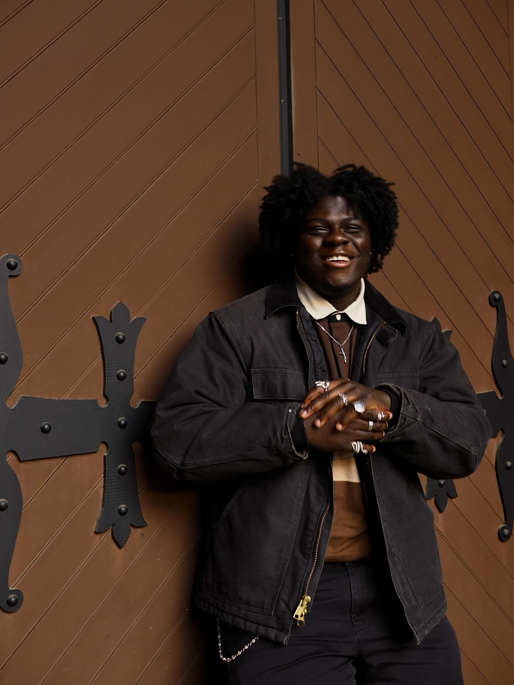
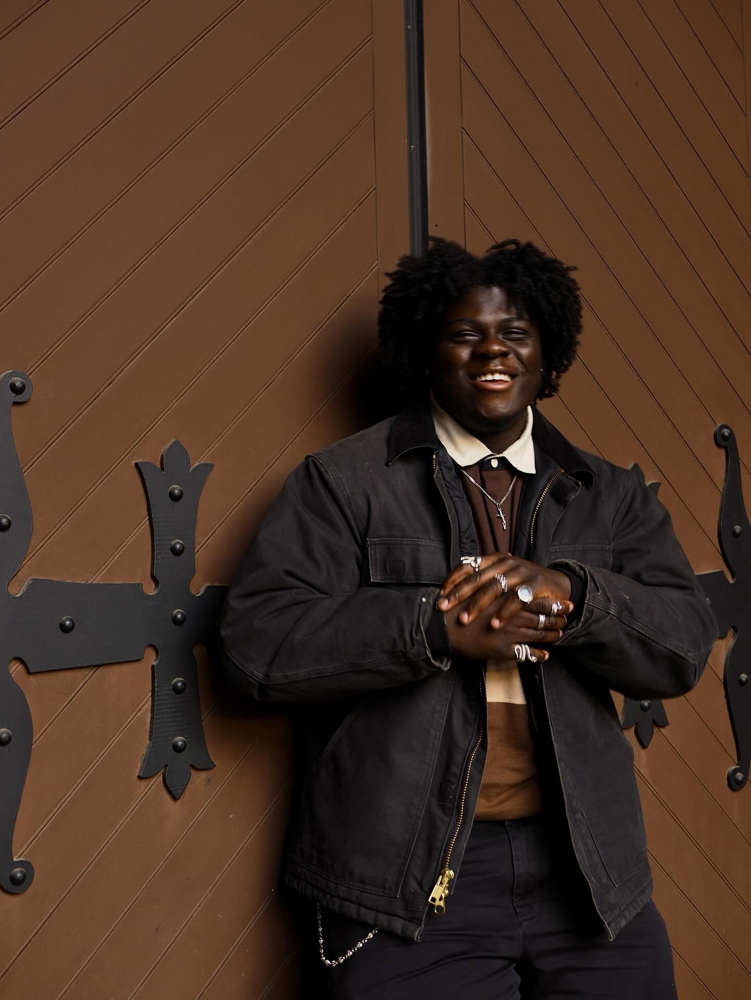
 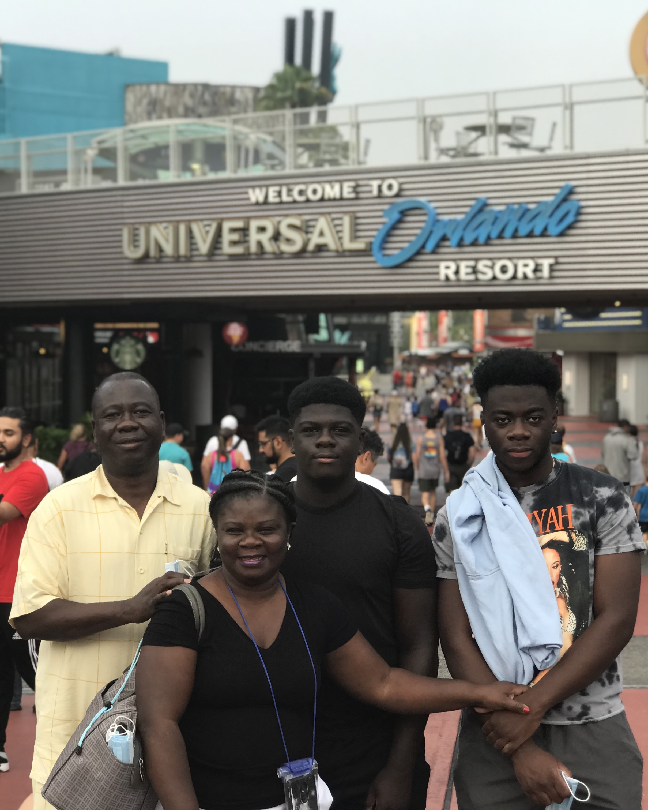
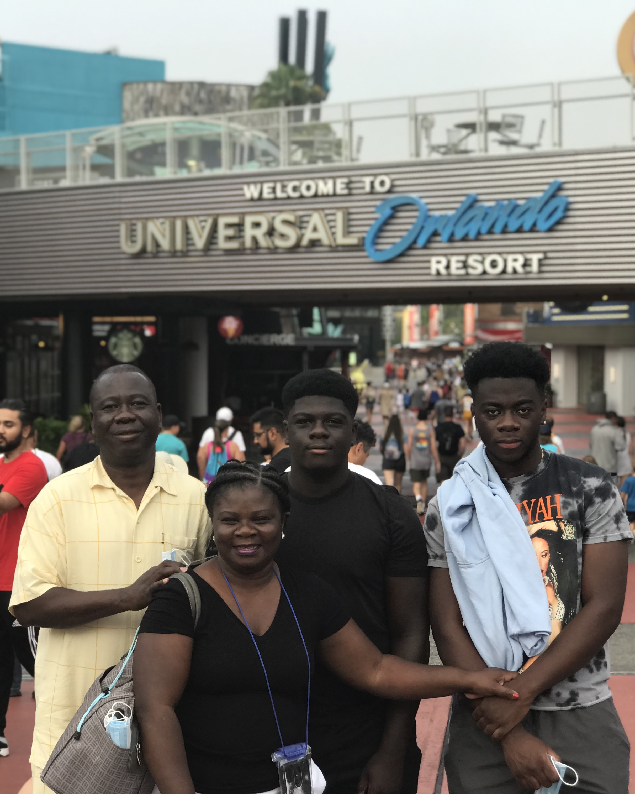
 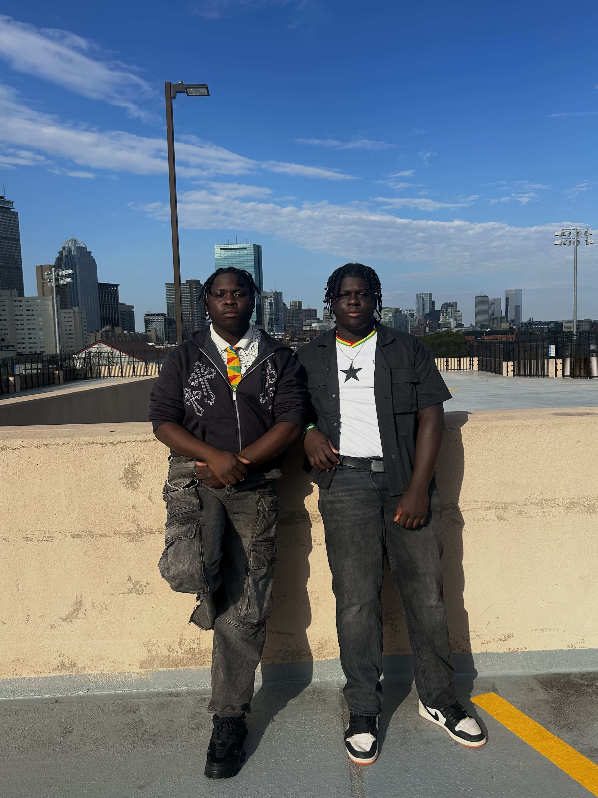
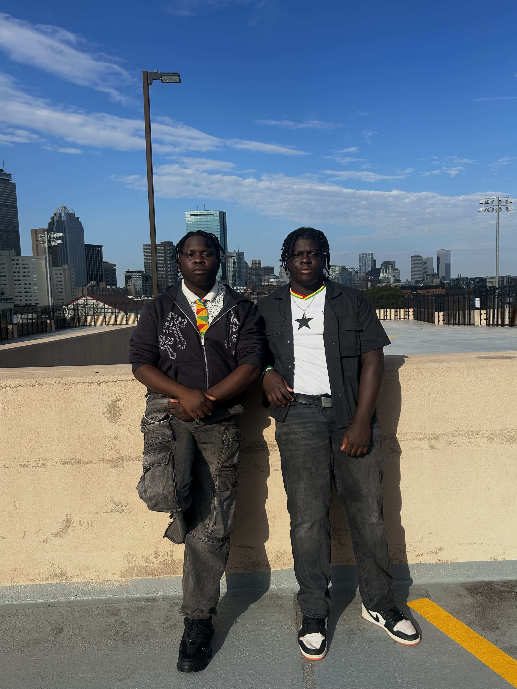
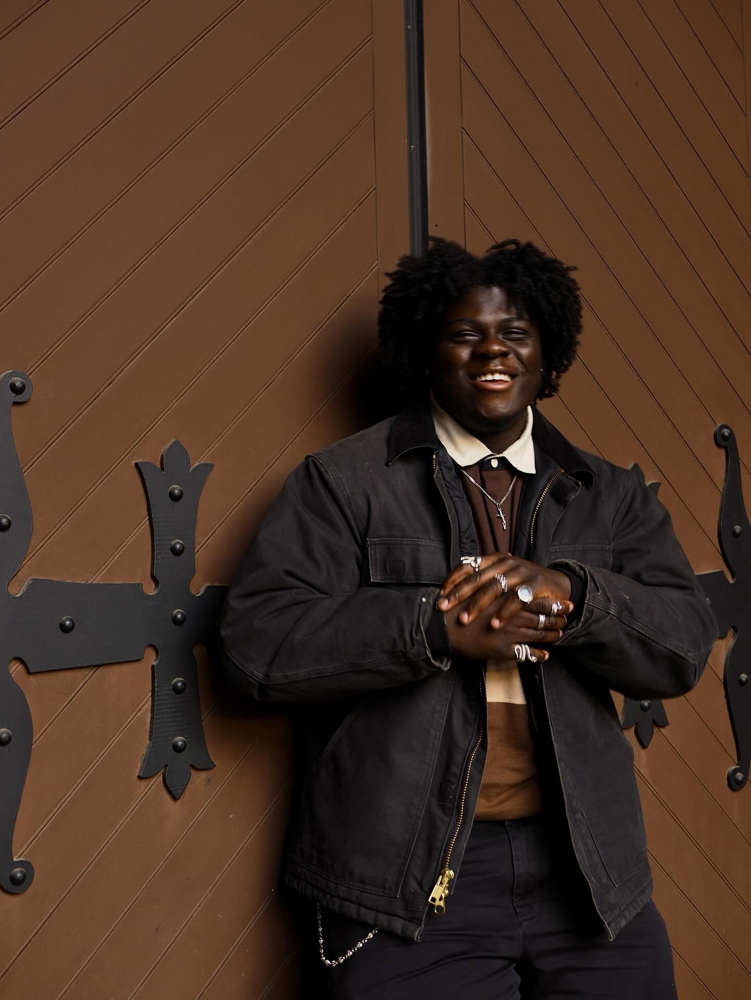
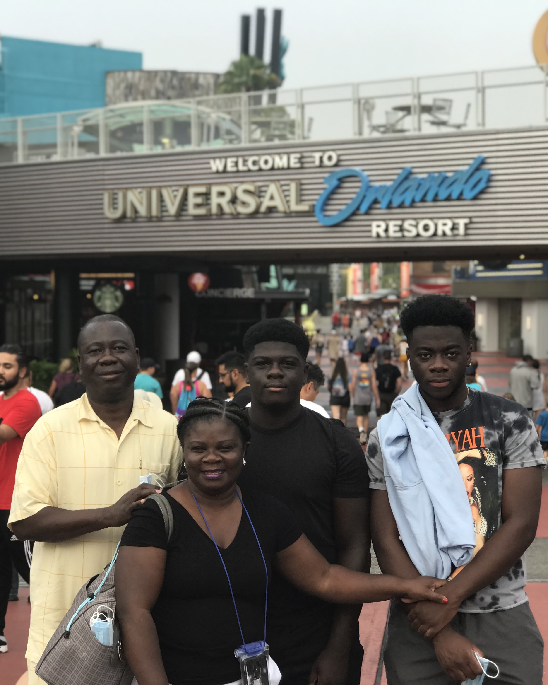
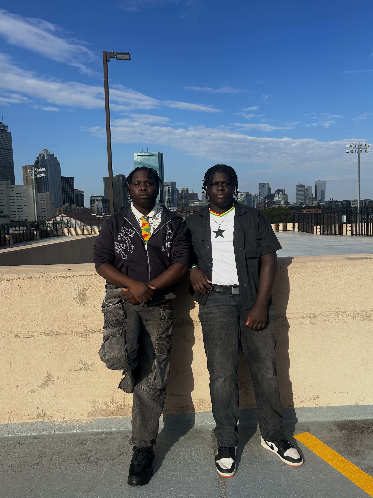
What Inspires Me
I draw inspiration from a mix of culture, storytelling, and creativity that shapes both how I think and how I work. Shows like Avatar: The Last Airbender taught me lessons in balance, strategy, and growth, while Marvel inspires me to explore complexity, layered narratives, and creative problem-solving. My Ghanaian roots instilled resilience, community, and the power of storytelling, guiding how I mentor others, lead projects, and build meaningful connections. Music, from Afrobeats to Hip-Hop and Reggae, fuels my creativity and focus, while sports like basketball teach persistence, teamwork, and discipline. Fashion and cooking provide outlets for experimentation, self-expression, and fresh perspectives.


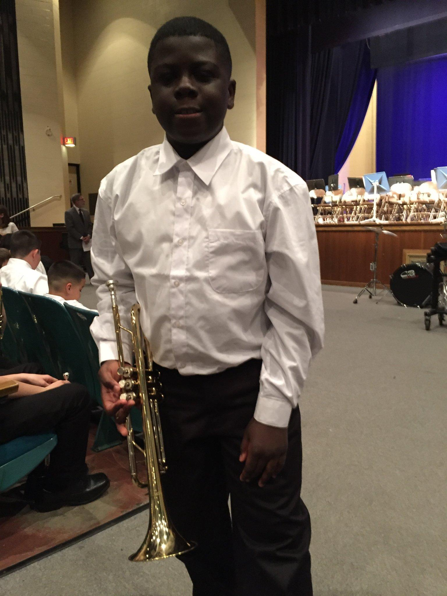